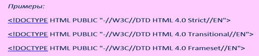

Модуль 3 Оформление веб-страниц. HTML
Глава 1 Структура документа – заголовок и тело
Для того, чтобы опубликовать в Интернете страницу, содержащую некоторую информацию, используется специально разработанный для этого язык HTML. HTML – HyperText Markup Language (Язык разметки гипертекста) представляет собой довольно простой набор команд, описывающих структуру документа [1].
Любой HTML-документ состоит из трех частей:
Строки, содержащей информацию о версии HTML;
Блока заголовка документа;
Тела документа, содержащего либо непосредственно отображаемую информацию, либо определяющего набор фреймов.
Вторая и третья части должны быть вложены в контейнер HTML. При этом указывать явно контейнеры для документа, его заголовка и тела нет надобности: если они опущены, подразумевается, что браузер сам определит, где что находится. Поэтому и открывающие и закрывающие теги для этих элементов отмечены как опциональные. Тем не менее, «правила хорошего тона» требуют, чтобы эти теги все-таки присутствовали.
Информация о версии – !DOCTYPE
Любой действительный документ HTML должен содержать информацию о версии языка HTML, используемого в документе. Существуют три типа документов:
1. HTML 4.0 Strict – такой документ не должен содержать отмененных элементов и атрибутов, и не должен быть контейнером для фреймов.
2. HTML 4.0 Transitional – более «мягкое» определение. Может содержать все то, что и HTML 4.0 Strict, а также отмененные элементы и атрибуты.
3. HTML 4.0 Frameset – указывает на то, что данный документ является контейнером для набора фреймов.
Описание технологического процесса обработки данных и его составных компонент посредством словесной и графической моделей, анализ этой информации и соотнесение с теоретическими сведеньями технологических процессов.

Дополнительно может быть указан также файл, содержащий DTD – document type definition (определение типа документа) для данного типа.
Закрывающий тег: не имеется, атрибутов не имеется.
Элемент HTML
После строки с информацией о версии, весь остальной документ должен быть заключен в контейнер HTML. Текст, помещенный вне этого элемента, может игнорироваться браузером.

Закрывающий и открывающий теги: опционально.
Собственные атрибуты:
VERSION – указывает версию HTML. Отменен. Необходимо использовать !DOCTYPE.
Общие атрибуты:
LANG – информация о языке.
DIR – направление текста.
Элемент HEAD
Данный элемент содержит информацию о текущем документе, такую, как заголовок, ключевые слова, и иную информацию, которая не должна отображаться в документе. Браузеры не отображают информацию, помещенную в контейнер HEAD, однако могут ее использовать для каких-либо иных целей.
Закрывающий и открывающий теги: опционально.
Собственные атрибуты:
PROFILE – указывает расположение одного или нескольких файлов, содержащих определения META.
Общие атрибуты:
те же: LANG и DIR
Элемент TITLE
Каждый действительный документ HTML должен иметь элемент TITLE в части HEAD. Этот элемент используется для определения содержания документа. Большинство браузеров отображают строку, размещенную внутри элемента TITLE в качестве заголовка окна.
Закрывающий тег: необходим.
Общие атрибуты: LANG и DIR.
Элемент META
Данный элемент используется для включения различной информации о документе, а также предоставляет возможность сообщать дополнительные инструкции как клиентской части (браузеру), так и серверной.
Например, чтобы указать автора документа, используется следующая конструкция:

В данном случае определяется свойство (автор), которому присваивается значение (Алексей Петров). Вы можете определять любые свойства и присваивать им любые значения. Вместе с тем, ряд свойств являются общепринятыми:
• Author – автор документа;
• Copyright – информация об авторском праве;
• Description – описание документа (для поисковых машин);
• Generator – название программы, с помощью которой создавался документ;
• Keywords – ключевые слова (для поисковых машин).
Закрывающий тег: нет.